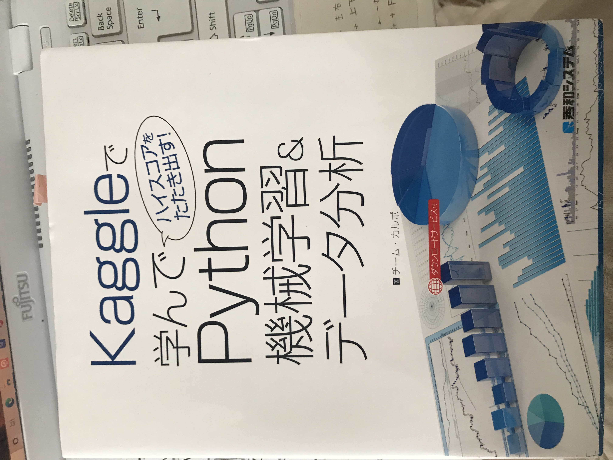

環境系エラー
- Error: Your Xcode (11.6) is too outdated.
つまり Xcodeが古いから App storeのアップデートからXcodeをアップデートする必要がある。
- まさかのpipが使えなくなった。。
easy_install pip で解決！
- Python hoge.pyを実行したら、そのアドレスはもう使用されていると出るんだけど。
Flaskでapi使う時は同一のアドレスは使えないから、プロセスごと削除するのにkill プロセス番号 を実行しなきゃだね。
画像系エラー
- expected 3, got 0 が出る。
画像が読み込めていない。
Numpy
arr.sort(1)の1は何を意味するのか？
axisを指す。例えば３次元配列ndarrayにおいては、縦がazis=0、横がaxis=1、奥行きがaxis=2となる。
resize
実際に配列の数を変える。
reshape
次元数を変える。（要素数は同じ！）
Pandas
axisはアキシスと読む。
locはlocationの略。ilocはindexの略。0番目から2番目の要素を抽出
df.loc[0:2, ['列名', '列名']] (start)~(end)
df.iloc[0:3, 0:4] (start)~(end+1)
行を条件で抽出したい
queryメソッドを使う df.query('age < 25')みたいな
列を条件抽出したい
isinメソッドを使う df['age'].isin(['30'])
Uniqueは一次元のデータつまりSeriesにしか適用できない。だからDataFrameには適用できない。つまりカラムを一つずつ取り出す必要がある
重複した行を削除したい
df=df.drop_duplicates()
列名を変更するには、renameメソッドで辞書型使う。
df.rename(columns={'A': 'a'})
ユニークな列要素の出現回数をカウントしたい
df['age'].value_counts()
print("\n")で２段分改行される。
フィルだごとダウンロードしたい
一度全てのフォルダをzipファイルに圧縮し、ダウンロードする
import shutil
shutil.make_archive('./contents', 'zip', root_dir='.')
Google Colaboratory
マウントとは
Google Colab上でGoogleドライブのファイルを使えるようにする処理のこと
オブジェクト指向
- カプセル化
変数や関数をクラスを利用して一つのインスタンス内に閉じ込めることで、
誤った変数や関数のオーバーライトなどを防ぐことです。
例えば同じ実行コード内に複数の同じ名前の変数を利用してしまった場合の事故等を防ぐことができます。
- 継承
たとえばデータ整形等のモデル学習前の変わらない根幹部分を親クラスとして定義し、その子クラスとして
試行したいモデルパターンに応じて複数の子クラスを定義する(SVM/ランダムフォレスト/DNN等)ことです。
これによりデータ整形だけを変えたい場合などに複数のモデルパターン分のコードをすべて変更せず、1回の変更で済むといった利点があります。
- ポリモーフィズム
機械学習におけるオブジェクト指向のメリット
複数の異なるモデルを同じフォーマット(前処理⇒[様々なモデルの構築・学習]⇒検証⇒実データ適用)で処理できる点です。
おススメ書籍
